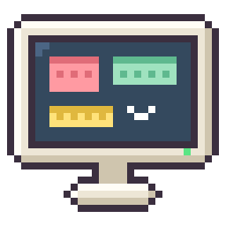
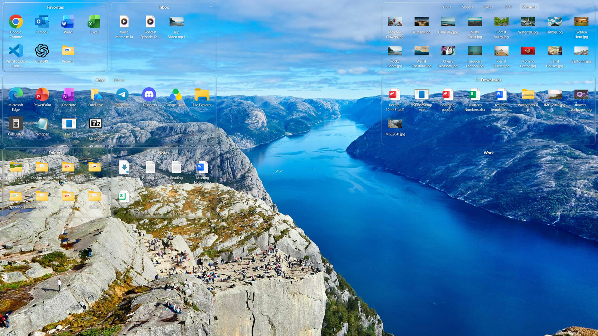

SpringDeskSpringDesk gathers your icons into translucent boxes that snap into place, sorts new files by type, and lets you preview or find anything without opening a window.
Free 7-day trial · Buy once, no subscriptionYour icons live in translucent boxes right on the wallpaper, below every window. Drag an icon in and the others make room. Boxes snap to a grid and never overlap, so the desktop stays neat however you move things around.

Drop one box onto another to keep more in one place, and switch with a click. Roll a box up to just its title bar when you need the space, and lock your layout so nothing moves by accident.
Save or download a file to the desktop and it goes straight to its tab: documents, spreadsheets, slides, PDFs, pictures and more. Anything SpringDesk can't place waits in the Inbox, so nothing goes missing.
Pictures, videos, music, text, code and PDFs open in an instant, without starting another app. The arrow keys flip through the rest. Other files show their details at a glance.
Click the desktop and type, or press Ctrl+Alt+Space from anywhere. Search finds what's in every box and tab, including the folders you show on your desktop.
SpringDesk follows Windows' light and dark mode. Boxes are clear glass: only their edges catch the light, and names stay readable on any wallpaper. Lower the transparency and the glass frosts over. It follows live wallpapers too.
Double-click to open, the usual right-click menu, drag and drop, cut, copy, paste, F2 to rename.
A separate layout for each resolution and scaling, and a daily backup you can go back to.
SpringDesk only shows your desktop in order. Nothing is moved or deleted.
No account, no ads, no data collected. It all happens on your PC.
Try SpringDesk free for 7 days. After that it's a single purchase in the Microsoft Store: no subscription, and updates come with it. The Store shows the price in your currency.
No. Your files stay in your Desktop folder; SpringDesk only shows them in boxes. Uninstall it and your desktop is exactly as it was.
No, SpringDesk needs Windows 11.
Yes. Quit the other organizer, start SpringDesk, and it sorts your desktop into boxes on its first run. You can rearrange everything from there.
SpringDesk is in English and Chinese, and follows your Windows display language.
Open Settings › About › Export diagnostics and open an issue with the zip. It holds logs and your layout, with file names but no file contents.